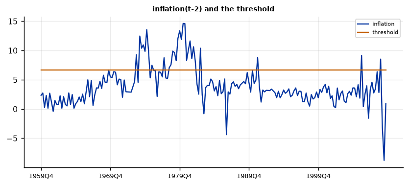
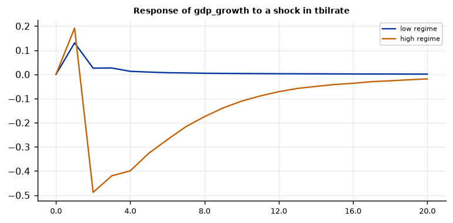
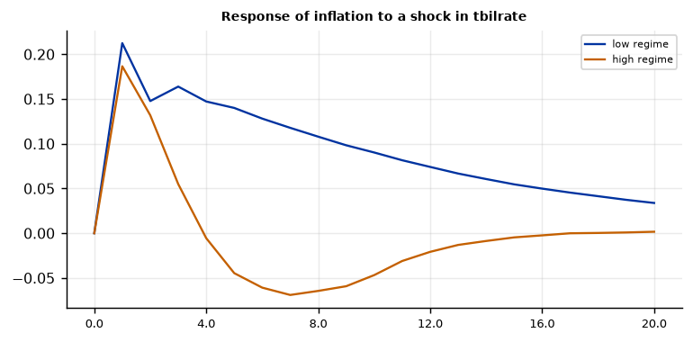

Run this model on your own data in Open Econometric Systems →
Step 1The question and the model
Does monetary policy work differently when inflation is high? A threshold VAR (Tsay 1998; Koop and Potter 2006) splits the sample into two regimes according to whether a threshold variable \(z_{t-d}\) lies above a threshold \(r\):
The coefficients and the covariance matrix differ between regimes. The threshold \(r\) and the delay \(d\) are unknown. In the Bayesian version used here, each regime has a Normal-Wishart prior (Minnesota-type moments), so its marginal likelihood is available in closed form and the posterior of \((r, d)\) is exact, computed over a grid of candidate thresholds. There is nothing to simulate for the threshold, so no convergence to check; coefficients are then drawn within each regime.
Two checks before you trust a threshold model
- Does the data prefer two regimes? The log Bayes factor of the threshold model against the linear VAR answers this directly. A threshold VAR can always fit better than a linear VAR; the Bayes factor penalises the extra parameters. If it is negative, use the linear VAR.
- Is the threshold variable the right one? Different candidates give very different Bayes factors (Step 3). Choose by the Bayes factor, and say that you did: the choice is part of the model.
Also check that each regime has enough observations: with two lags of three variables, a regime has 21 coefficients per equation, so a regime of 30 quarters is thin. The prior helps but results for the small regime are imprecise.
How to write it: the model
We estimate a Bayesian threshold VAR (Tsay 1998; Koop and Potter 2006) in GDP growth, inflation and the three-month Treasury bill rate, with two lags. The regime is determined by whether inflation, \(d\) quarters earlier, exceeds a threshold \(r\). Each regime has its own coefficients and covariance matrix, with a Normal-Wishart prior with Minnesota moments (overall tightness 0.2). Because the marginal likelihood is available analytically in each regime, the joint posterior of the threshold (over a 40-point grid between the 15th and 85th percentiles of the threshold variable) and the delay (one or two quarters) is computed exactly. We compare the threshold model with a linear VAR using the log Bayes factor, and report results for the posterior mode of the threshold.
Step 2Load the data and test for unit roots
import numpy as np
import pandas as pd
import oes_engine as oes # pip install -e open-econometric-systems/oes-engine
data = open("us_macro.csv").read()
df = pd.read_csv("us_macro.csv")
vars_ = ["gdp_growth", "inflation", "tbilrate"]
print(df[vars_].describe().round(2).loc[["mean", "std", "min", "max"]])
spec = dict(vars=vars_, threshold_var="inflation", time="date", lags=2, max_delay=2, trim=0.15, grid=40, lambda1=0.2, horizon=20, draws=1000)
r = oes.run("tvar", data, spec)
oes.show(r, "Unit-root") gdp_growth inflation tbilrate
mean 3.10 3.98 5.32
std 3.52 3.25 2.80
min -8.28 -8.79 0.12
max 15.43 14.62 15.33
Unit-root tests
ADF level, constant: p ADF level, trend: p ADF first difference: p KPSS level: p Conclusion
Variable
gdp_growth 0.0000 0.0000 0.0 0.1000 I(0)
inflation 0.0271 0.0822 0.0 0.0808 I(0)
tbilrate 0.2805 0.4462 0.0 0.0538 I(1)
Note: ADF H0: unit root; KPSS H0: stationary (p-values are truncated at 0.01 and 0.10). For a Minnesota-type prior use a prior mean of 1 on the own first lag for I(1) variables in levels (random walk) and 0 for stationary variables. A VAR in levels with a random-walk prior remains valid when the variables are I(1) or cointegrated (Sims, Stock and Watson 1990).How to read it
Inflation and GDP growth reject a unit root; the T-bill rate does not (p = 0.28). The regimes are defined by a stationary variable, which is what a threshold model needs: a trending threshold variable would spend the whole sample in one regime. Quarterly annualised inflation is volatile (it ranges widely), so the high regime also catches quarters of temporary price spikes, not only the high-inflation years.
Step 3Do you need a threshold, and on which variable?
Run the model with each candidate threshold variable and compare the log Bayes factor against the linear VAR.
def threshold_summary(res):
t = oes.frame(next(t for t in res["tables"] if t["title"].startswith("Threshold and regimes")))["Value"]
return t
rows = []
for z in ["gdp_growth", "inflation", "tbilrate", "unemp", "cons_growth", "inv_growth", "m1_growth"]:
t = threshold_summary(oes.run("tvar", data, dict(spec, threshold_var=z)))
rows.append([z, round(t["Threshold r"], 2), int(t["Observations: low regime"]), int(t["Observations: high regime"]),
round(t["Log Bayes factor, threshold vs linear VAR"], 1)])
print(pd.DataFrame(rows, columns=["threshold variable", "threshold r", "n low", "n high", "log Bayes factor"]).set_index("threshold variable"))threshold r n low n high log Bayes factor threshold variable gdp_growth 1.61 58 142 -4.0 inflation 6.65 170 30 26.4 tbilrate 6.82 152 48 16.8 unemp 6.20 136 64 -8.4 cons_growth 1.66 48 152 -3.7 inv_growth -6.77 47 153 -2.9 m1_growth 1.66 52 148 1.0
How to read it
A positive log Bayes factor favours the threshold model; above 4.6 is "decisive" on Jeffreys' scale. Inflation (26.4) and the T-bill rate (16.8) are strongly supported; GDP growth (\(-4.0\)), consumption growth (\(-3.7\)), unemployment (\(-8.4\)) and investment growth (\(-2.9\)) are not (the linear VAR is preferred), and money growth is at zero (1.0). So the economy's dynamics depend on the level of inflation or interest rates, not on the stage of the business cycle measured by growth. Inflation is the natural choice for the question, and its Bayes factor is the largest; we use it below. This is a model choice made on the data: report the table.
Caution: a Bayes factor in favour of a regime split can also reflect different volatility in the two regimes (the 1970s were more volatile than the 1990s). Compare with the SV-VAR guide, which allows changing volatility without splitting the coefficients.
Step 4Estimate
oes.summary(r)
oes.show(r, "Posterior of the delay")
oes.show(r, "Threshold and regimes")Observations: 200
Threshold: 6.6467
Delay: 2
High-regime share: 0.15
Lags: 2
Posterior of the delay
Posterior probability
Delay d
1 0.0
2 1.0
Threshold and regimes (at the posterior mode)
Value
Item
Threshold r 6.6467
Posterior mean of r 6.6459
Delay d 2.0000
Observations: low regime 170.0000
Observations: high regime 30.0000
Log Bayes factor, threshold vs linear VAR 26.4090
Note: Regime is high when inflation(t - d) > r. Bayes factor averages the marginal likelihood over the grid (uniform prior).How to read it
The data choose a threshold of 6.65% annualised quarterly inflation, with a delay of two quarters (the posterior probability of a delay of one quarter is below 0.0001): the economy is in the high regime when inflation two quarters earlier exceeded 6.65%. That regime holds 30 of the 200 quarters (15%) and the low regime 170. The log Bayes factor against a single linear VAR is 26.4, overwhelming support for two regimes (on Jeffreys' scale, above 4.6 is decisive). The posterior mean of the threshold (6.646) equals the mode (6.647): with a finer grid of 100 points, 95% of the posterior mass sits on 6.65 and 3% on 6.58. Do not over-read this precision: it arises because moving a single quarter between regimes changes the marginal likelihood a great deal when the high regime has only 30 quarters. Step 9 shows how the threshold moves when the minimum regime size changes.
Step 5Regime dates
oes.show(r, "Regime dating")
oes.plot(r, "inflation(t-2) and the threshold", ncols=1, size=(6.5, 3))Regime dating (regime 0 = low, regime 1 = high)
From To Periods Average probability
Regime
Regime 0 1959Q4 1969Q2 39 1.0
Regime 1 1969Q3 1969Q3 1 1.0
Regime 0 1969Q4 1973Q2 15 1.0
Regime 1 1973Q3 1973Q3 1 1.0
Regime 0 1973Q4 1973Q4 1 1.0
Regime 1 1974Q1 1975Q2 6 1.0
Regime 0 1975Q3 1975Q3 1 1.0
Regime 1 1975Q4 1975Q4 1 1.0
Regime 0 1976Q1 1977Q2 6 1.0
Regime 1 1977Q3 1977Q3 1 1.0
Regime 0 1977Q4 1978Q1 2 1.0
Regime 1 1978Q2 1982Q1 16 1.0
Regime 0 1982Q2 1982Q3 2 1.0
Regime 1 1982Q4 1982Q4 1 1.0
Regime 0 1983Q1 1990Q4 32 1.0
Regime 1 1991Q1 1991Q1 1 1.0
Regime 0 1991Q2 2005Q4 59 1.0
Regime 1 2006Q1 2006Q1 1 1.0
Regime 0 2006Q2 2008Q3 10 1.0
Regime 1 2008Q4 2008Q4 1 1.0
Regime 0 2009Q1 2009Q3 3 1.0
How to read it
Because the regime is a function of an observed variable, regime membership is known once the threshold is fixed, so every probability is 1. The 30 high-inflation quarters fall into two real episodes and eight isolated quarters. The episodes are 1974Q1–1975Q2 (the first oil shock) and 1978Q2–1982Q1 (the second oil shock and the Volcker disinflation, 16 quarters). The single quarters are 1969Q3, 1973Q3, 1975Q4, 1977Q3, 1982Q4, 1991Q1, 2006Q1 and 2008Q4: spikes in the quarterly CPI, some from energy prices, not episodes of sustained inflation. In a paper, describe the high regime as largely the oil-shock years, and note that it is close to a period dummy for the 1970s, which limits what can be inferred about "high inflation" in general.
Step 6What differs between the regimes?
oes.show(r, "Low regime, equation: tbilrate")
oes.show(r, "High regime, equation: tbilrate")Low regime, equation: tbilrate
Mean Std. dev. 2.5% Median 97.5% P(> 0)
Parameter
const 0.1469 0.1267 -0.0972 0.1411 0.3981 0.876
L1.gdp_growth 0.0455 0.0138 0.0165 0.0463 0.0715 1.000
L1.inflation -0.0026 0.0202 -0.0437 -0.0023 0.0379 0.454
L1.tbilrate 0.9102 0.0546 0.8042 0.9106 1.0187 1.000
L2.gdp_growth 0.0202 0.0119 -0.0039 0.0207 0.0422 0.950
L2.inflation 0.0259 0.0189 -0.0099 0.0257 0.0630 0.919
L2.tbilrate -0.0109 0.0516 -0.1096 -0.0125 0.0947 0.402
High regime, equation: tbilrate
Mean Std. dev. 2.5% Median 97.5% P(> 0)
Parameter
const 1.2060 1.1302 -1.0087 1.1844 3.5095 0.870
L1.gdp_growth 0.0155 0.0605 -0.1009 0.0148 0.1379 0.597
L1.inflation 0.0589 0.0845 -0.1094 0.0563 0.2190 0.768
L1.tbilrate 0.7055 0.1620 0.3803 0.7029 1.0162 1.000
L2.gdp_growth 0.0131 0.0441 -0.0737 0.0137 0.1019 0.623
L2.inflation -0.0297 0.0711 -0.1591 -0.0317 0.1073 0.327
L2.tbilrate 0.1440 0.1429 -0.1238 0.1426 0.4321 0.848How to read it
The policy-rate equation shows what changes. In the low regime the rate follows the economy: it responds to lagged GDP growth (0.046, 95% interval 0.016 to 0.072; probability of a positive sign 1.00) and is very persistent (own lag 0.91). In the high regime the response to growth is small and imprecise (0.015, interval \(-0.10\) to 0.14), the response to inflation is 0.059 (\(-0.11\) to 0.22), and the own lag is lower (0.71, interval 0.38 to 1.02). With only 30 quarters, the intervals are wide: the data cannot say that the rule changed, only that the low-regime rule is estimated precisely and the high-regime rule is not. Report this limitation rather than reading the point estimates as a regime-dependent policy rule.
Step 7Impulse responses by regime
oes.plot(r, "Response of gdp_growth to a shock in tbilrate", ncols=1, size=(6, 3))
oes.plot(r, "Response of inflation to a shock in tbilrate", ncols=1, size=(6, 3))

How to read it
Responses to a one-standard-deviation rise in the T-bill rate, within each regime (the chart shows posterior medians without credible bands). Output: in the low-inflation regime GDP growth does not respond (+0.01 after a year); in the high-inflation regime it falls by 0.40 percentage point after a year, 0.18 after two and 0.07 after three. Inflation: in the low regime it rises (0.15 after a year, 0.11 after two): the price puzzle of the BVAR guide; in the high regime there is no price puzzle (\(-0.006\) after a year and \(-0.06\) after two). So the textbook sign of monetary transmission appears in the high regime, which is the regime of the oil-shock years, and the price puzzle in the low regime. Because the high regime has 30 observations, do not report these differences as significant without computing credible bands from the draws; the Bayes factor in Step 3 says that the regimes differ, not that each difference is large.
Step 8Diagnostics
oes.show(r, "Residual diagnostics, low")
oes.show(r, "Residual diagnostics, high")Residual diagnostics, low regime (posterior mean)
Statistic p-value Detail
Test
Portmanteau (Hosking), 12 lags 127.0303 0.1020 df = 108; H0: no residual autocorrelation (approximate after estimating lags)
Ljung-Box, gdp_growth 12.5846 0.3999 H0: no autocorrelation
Jarque-Bera, gdp_growth 3.6170 0.1639 H0: normal residuals
ARCH LM, gdp_growth 10.3668 0.0347 H0: no conditional heteroskedasticity
Ljung-Box, inflation 39.2313 0.0001 H0: no autocorrelation
Jarque-Bera, inflation 80.3909 0.0000 H0: normal residuals
ARCH LM, inflation 4.5236 0.3398 H0: no conditional heteroskedasticity
Ljung-Box, tbilrate 22.3379 0.0339 H0: no autocorrelation
Jarque-Bera, tbilrate 173.5066 0.0000 H0: normal residuals
ARCH LM, tbilrate 3.8023 0.4334 H0: no conditional heteroskedasticity
Residual diagnostics, high regime (posterior mean)
Statistic p-value Detail
Test
Portmanteau (Hosking), 4 lags 34.1688 0.5559 df = 36; H0: no residual autocorrelation (approximate after estimating lags)
Ljung-Box, gdp_growth 1.5957 0.8096 H0: no autocorrelation
Jarque-Bera, gdp_growth 1.9981 0.3682 H0: normal residuals
ARCH LM, gdp_growth 1.0273 0.7946 H0: no conditional heteroskedasticity
Ljung-Box, inflation 11.9657 0.0176 H0: no autocorrelation
Jarque-Bera, inflation 0.2579 0.8790 H0: normal residuals
ARCH LM, inflation 5.4662 0.1407 H0: no conditional heteroskedasticity
Ljung-Box, tbilrate 4.0302 0.4019 H0: no autocorrelation
Jarque-Bera, tbilrate 7.7219 0.0210 H0: normal residuals
ARCH LM, tbilrate 7.0021 0.0718 H0: no conditional heteroskedasticityHow to read it
In the low regime (170 quarters) the joint portmanteau test does not reject (p = 0.10), but Ljung-Box rejects for inflation (p = 0.0001) and the interest rate (p = 0.034), normality is rejected for both, and the ARCH test rejects for GDP growth (p = 0.035). In the high regime (30 quarters) Ljung-Box rejects for inflation (p = 0.018) and nothing else does, but these tests have little power with 30 observations, so the absence of rejections says little. Remaining autocorrelation in inflation suggests more lags; Step 9 shows that the threshold and the Bayes factor survive three and four lags. Changing volatility between the regimes is not modelled beyond the regime-specific covariance matrix; if it matters to your question, see the SV-VAR guide.
Step 9Robustness: lags, trimming, grid and prior
def row(**kw):
t = threshold_summary(oes.run("tvar", data, dict(spec, **kw)))
return [round(t["Threshold r"], 2), int(t["Observations: high regime"]), round(t["Log Bayes factor, threshold vs linear VAR"], 1)]
variants = {"baseline": {}, "1 lag": dict(lags=1), "3 lags": dict(lags=3), "4 lags": dict(lags=4),
"min regime share 10%": dict(trim=0.10), "min regime share 25%": dict(trim=0.25),
"grid of 100": dict(grid=100), "lambda1 = 0.1": dict(lambda1=0.1), "lambda1 = 0.5": dict(lambda1=0.5), "delay up to 4": dict(max_delay=4)}
print(pd.DataFrame({k: row(**v) for k, v in variants.items()}, index=["threshold r", "n high", "log Bayes factor"]).T)threshold r n high log Bayes factor baseline 6.65 30.0 26.4 1 lag 6.65 30.0 31.8 3 lags 6.65 30.0 22.9 4 lags 6.65 30.0 23.9 min regime share 10% 7.05 29.0 27.7 min regime share 25% 5.00 50.0 16.7 grid of 100 6.65 30.0 25.5 lambda1 = 0.1 6.65 30.0 5.4 lambda1 = 0.5 6.65 30.0 45.7 delay up to 4 6.65 30.0 26.3
How to read it
Each row changes one thing. Lags: with one to four lags the threshold is 6.65 and the Bayes factor is 31.8, 26.4, 22.9 and 23.9. Minimum regime share: allowing 10% in each regime moves the threshold to 7.05 (29 high quarters); requiring 25% moves it to 5.0 (50 high quarters), with a Bayes factor of 16.7: the threshold is sensitive to how small the high regime may be, so report the trimming. Grid and delay: a grid of 100 points and a maximum delay of four quarters change nothing (the delay stays at two). Prior: the Bayes factor ranges from 5.4 (\(\lambda_1 = 0.1\)) to 45.7 (\(\lambda_1 = 0.5\)). Marginal likelihoods depend on the prior, so the size of the Bayes factor is not robust, but it is positive and large in every variant, so the conclusion that two regimes beat one is. Report a range, not a single number.
Step 10Write the results
How to write it: results
We compare a Bayesian threshold VAR with a linear VAR using the log Bayes factor, for seven candidate threshold variables. The data support inflation (log Bayes factor 26.4) and the Treasury bill rate (16.8) as threshold variables; GDP growth, consumption growth, unemployment and investment growth are not supported (log Bayes factors between \(-8.4\) and \(-2.9\)). With inflation as the threshold variable the posterior concentrates on a delay of two quarters and a threshold of 6.65%, which defines a high-inflation regime of 30 quarters, 22 of them in the oil-shock episodes of 1974–75 and 1978–82. In the low-inflation regime, a rise in the policy rate does not reduce output and raises inflation (the price puzzle); in the high-inflation regime output falls by 0.4 percentage point after a year and inflation does not rise. These regime differences are estimated with 30 observations and are imprecise. The threshold, the delay and the sign of the Bayes factor do not change with one to four lags, the grid, or the prior tightness; the threshold moves between 5.0 and 7.05 depending on the minimum regime size (10% to 25%), and the Bayes factor ranges from 5.4 to 45.7 with the prior.
| Report | What | Where |
|---|---|---|
| Model | Threshold variable, delay and threshold grid, prior, minimum regime share | Step 1 |
| Choice | Log Bayes factors for the candidate threshold variables; linear VAR comparison | Step 3 |
| Threshold | Posterior mode and mean, regime sizes, regime dates | Steps 4 and 5 |
| Differences | Regime-specific coefficients; responses by regime | Steps 6 and 7 |
| Diagnostics | Residual tests by regime | Step 8 |
| Robustness | Lags, trimming, grid, prior, delay | Step 9 |
References. Tsay (1998), Journal of the American Statistical Association; Koop and Potter (2006), Econometrics Journal; Balke (2000), Review of Economics and Statistics; Hubrich and Teräsvirta (2013), Journal of Economic Surveys; Kass and Raftery (1995), Journal of the American Statistical Association; Chen and Lee (1995), Journal of Business & Economic Statistics.